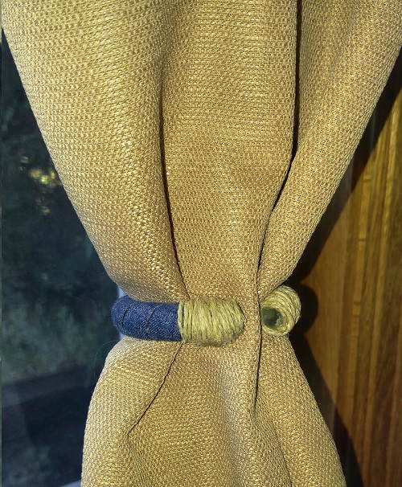

Featured Products

Green Apron
Size-Large
Perfect for your little baker!

Elsa Costume
Size-Medium
Inspired by the disney movie Frozen!


The Creative Process: Why?
Why do we create? Or I guess a better question is why do some people create more than others? I think it’s a combination of the old adage “necessity is the mother of invention” and natural talent. Ingenuity is a skill like playing a sport or learning a trade. As a skill it can be honed with practice. In other words, the more you use it the better and more creative you become. As for necessity that can lead to not only specific crafts like things to improve your home, but it can also change how you see objects around you. For example, I have curtains all around my home. However, my home is fairly dark so I like to have the curtains pulled back more often than not. This need led me to two very creative options as well as a more basic option. I’ll start with the basic option. I had these tie backs that came with a different set of curtains.
All I did to make them more useful was add a button so that they were able to stay together without any hooks on my wall. Really simple fix right?
My second example was a bit more complicated. I had these used grommets from a curtain I had converted a long time ago. I also had elastic from… well… an old bra. I sewed the elastic around one end and utilized the existing hook on the strap to make it easy to detach. To look at it you wouldn’t think it was made from parts that by all rights should have been thrown away.

Third one was even trickier. I had old plastic shower curtain rings that I had no intention of using again. So again why are they still hanging around? You could say I have a problem but I like to think of it as a solution! First I cut the ends off with a pair of sharp scissors. Next, I took jean rope and wrapped it around hot gluing as I went. Finally, I took some hemp rope and wrapped it around the ends. Voila! Basically free curtain tie backs that are not only unique but also useful!

So why do we create? Besides the obvious that saying “I made those” ALWAYS sounds more impressive than “oh I bought (item) here”. We all have different motives, it could be out of necessity like my tiebacks. It could be because you can't afford to make things. Hell maybe you want to make a custom gift that you just can't find in stores. Inspiration can come from anywhere so try to use some forsight when you decide what is and isn't junk.
Back to Ideas